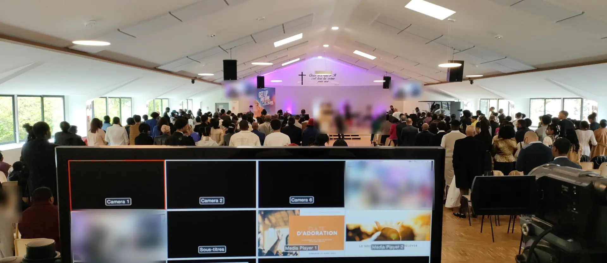
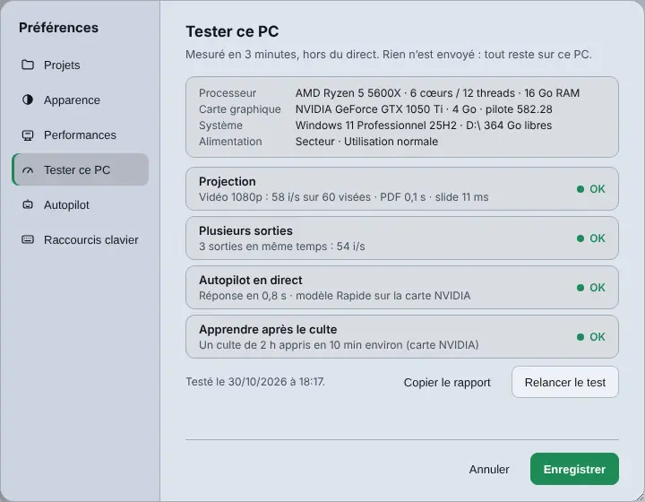
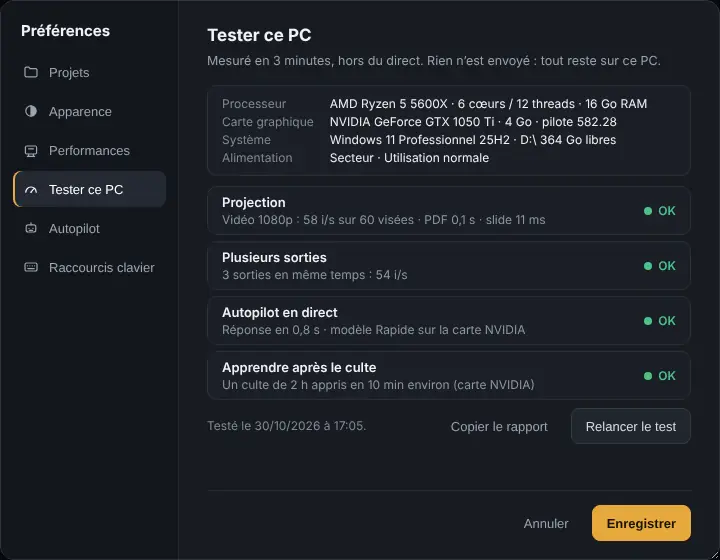

Un chant pas prévu ?
Un chant demandé au dernier moment, un verset que le prédicateur ajoute : tapez-le, il est à l’écran. Le reste du programme ne bouge pas.
RégieLive conduit l’écran du culte : chants, versets, vidéos et présentations, pour la salle comme pour le direct. Préparez à l’avance, ou ajoutez au dernier moment : tout reste simple.
En français, pensé pour les bénévoles. Porté par l’association ACP.
Je prépare
Bienvenue

Pensé pour des églises comme la vôtre,
et pour les bénévoles qui les servent.
Un chant demandé au dernier moment, un verset que le prédicateur ajoute : tapez-le, il est à l’écran. Le reste du programme ne bouge pas.
Glissez-la dans le programme : RégieLive la copie dans le dossier du culte. Retirez la clé, rien ne disparaît, même au culte suivant ou sur un autre ordinateur.
Prédication
RégieLive écoute et vous propose le verset annoncé. Vous gardez la main : un clic pour l’afficher, rien ne part à l’écran sans vous.
Si vous le pouvez, préparez le programme : tapez « 42 » pour le chant 42, « jn316 » pour Jean 3.16, glissez les vidéos et les images. Ce n’est pas obligatoire : tout peut s’ajouter en cours de route.
Une touche envoie la suite à l’écran. Un chant pas prévu, une vidéo apportée au dernier moment : ajoutez-les, ils sont prêts en quelques secondes. Ce que l’assemblée voit reste toujours devant vous.
Rien à ranger : le programme, les vidéos et les images sont gardés dans un seul dossier, prêt à être réutilisé ou copié sur un autre ordinateur.
Choisissez un bloc : il passe à l’écran, comme dans RégieLive.
Pour afficher les chants, les versets et les vidéos, la plupart des ordinateurs récents sous Windows 11 ou Ubuntu 26.04 suffisent. RégieLive contient un test : en trois minutes, il vous dit ce que votre ordinateur peut faire.
Voir ce qu’il faut
